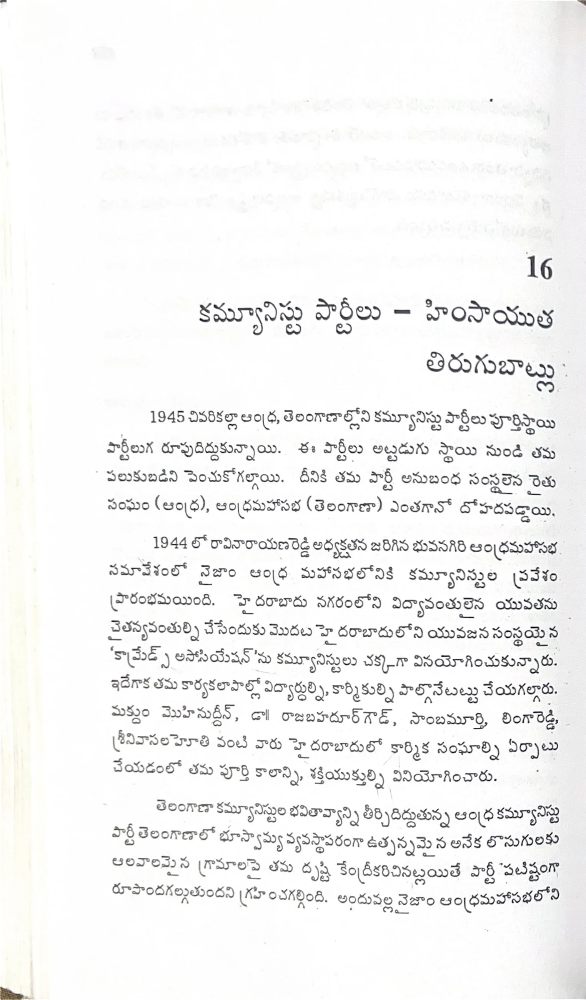

ముద్రిత పుట 258
scanతో మాన్యువల్గా ధృవీకరించిన పాఠ్యం

16 కమ్యూనిస్టు పార్టీలు - హింసాయుత తిరుగుబాట్లు 1945 చివరికల్లా ఆంధ్ర, తెలంగాణాల్లోని కమ్యూనిస్టు పార్టీలు పూర్తిస్థాయి పార్టీలుగ రూపుదిద్దుకున్నాయి. ఈ పార్టీలు అట్టడుగు స్థాయి నుండి తమ పలుకుబడిని పెంచుకోగల్గాయి. దీనికి తమ పార్టీ అనుబంధ సంస్థలైన రైతు సంఘం (ఆంధ్ర), ఆంధ్రమహాసభ (తెలంగాణా) ఎంతగానో దోహదపడ్డాయి. 1944లో రావి నారాయణరెడ్డి అధ్యక్షతన జరిగిన భువనగిరి ఆంధ్రమహాసభ సమావేశంలో నిజాం ఆంధ్ర మహాసభలోనికి కమ్యూనిస్టుల ప్రవేశం ప్రారంభమయింది. హైదరాబాదు నగరంలోని విద్యావంతులైన యువతను చైతన్యవంతుల్ని చేసేందుకు మొదట హైదరాబాదులోని యువజన సంస్థయైన 'కామ్రేడ్స్ అసోసియేషన్'ను కమ్యూనిస్టులు చక్కగా వినియోగించుకున్నారు. ఇదేగాక తమ కార్యకలాపాల్లో విద్యార్థుల్ని, కార్మికుల్ని పాల్గొనేటట్టు చేయగల్గారు. మఖ్దూం మొహీనుద్దీన్, డా. రాజబహదూర్ గౌడ్, సాంబమూర్తి, లింగారెడ్డి, శ్రీనివాసలహోతి వంటి వారు హైదరాబాదులో కార్మిక సంఘాల్ని ఏర్పాటు చేయడంలో తమ పూర్తి కాలాన్ని, శక్తియుక్తుల్ని వినియోగించారు. తెలంగాణా కమ్యూనిస్టుల భవితవ్యాన్ని తీర్చిదిద్దుతున్న ఆంధ్ర కమ్యూనిస్టు పార్టీ తెలంగాణాలో భూస్వామ్య వ్యవస్థాపరంగా ఉత్పన్నమైన అనేక దోషాలకు ఆలవాలమైన గ్రామాలపై తమ దృష్టి కేంద్రీకరించినట్లయితే పార్టీ పటిష్టంగా రూపొందగల్గుతుందని గ్రహించగల్గింది. అందువల్ల నిజాం ఆంధ్రమహాసభలోని